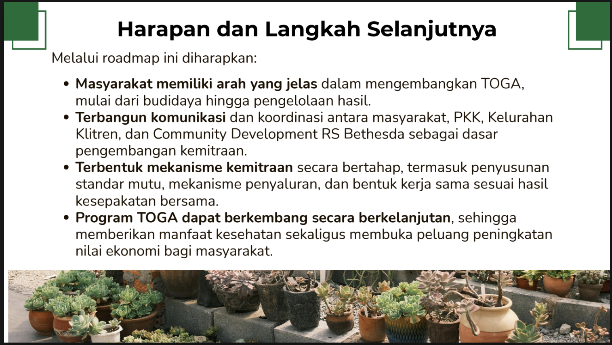
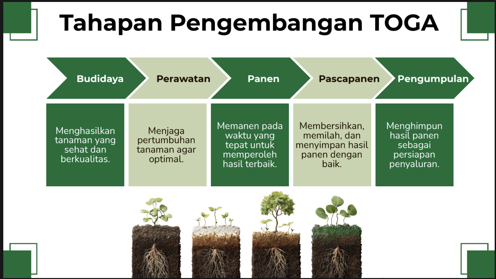
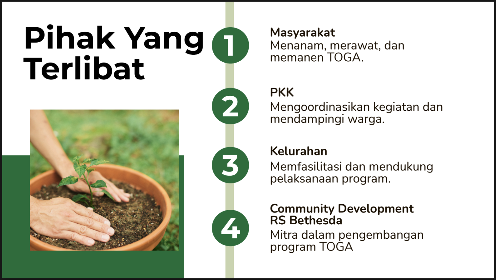
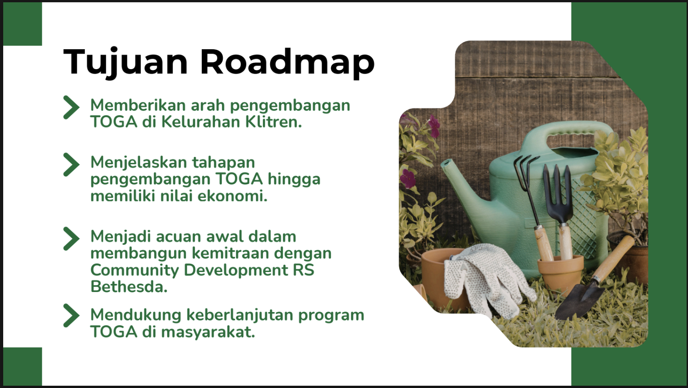

Beranda
chevron_right
Program dan Materi
chevron_right
Roadmap Pengembangan Nilai Ekonomi TOGA Berbasis Kemitraan
arrow_back
Kembali ke Program dan Materi
book
Materi
Roadmap Pengembangan Nilai Ekonomi TOGA Berbasis Kemitraan
Program ini menyajikan roadmap pengembangan Tanaman Obat Keluarga (TOGA) berbasis kemitraan sebagai panduan dalam meningkatkan nilai ekonomi TOGA. Roadmap memuat tahapan pengembangan mulai dari budidaya, pengolahan hasil, pengemasan, hingga pemasaran dan kerja sama dengan berbagai mitra. Melalui perencanaan yang terarah, diharapkan TOGA dapat berkembang menjadi produk bernilai tambah yang mampu meningkatkan kesejahteraan masyarakat dan mendukung pemberdayaan ekonomi lokal.

description
Lihat Materi
open_in_new
Dokumentasi Terkait



